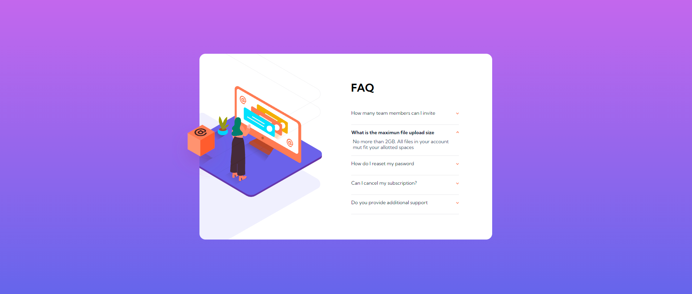

This is a solution to the FAQ accordion card challenge on Frontend Mentor. Frontend Mentor challenges help you improve your coding skills by building realistic projects.
Users should be able to:

In this project I learned how important it is to define a good structure in HTML in the first place, as it can help you to apply the style more easily later. I used the mobile-first strategy and applied different styles to the classes, I also used the specific images for this size. After that I used media@ to change some classes and images and to make my project responsive. The size I used with @media was a minimum width of 972px.
css
@media all and (min-width: 972px){}
In the mobile view, only one column is needed with the images on top and the accordion below. To overlay some images on top of others, I used the flex property and I set the rest of the elements in space.
css
.scene{
display: flex;
justify-content: center;
top: -110px;
position: relative;
}
In the desktop view, there were necessary two columns so I used grid property then grid-template-columns to put both columns inline.
css
.container{
margin: 200px auto 0 auto ;
display: grid;
grid-template-columns: 1fr 1fr;
}
In desktop view images cannot protrude from container, so I applied overflow: hidden property, then I set the rest of the elements in space.
css
.scene{
top: 0;
display: flex;
height: 100%;
position: relative;
overflow: hidden;
}
For active the accordion I used native javascript applying “for” to cycle through all the elements, then the function addEventListener with click event to active the toggle and this way unfold the hidden part of the accordion.
```js const accordions = document.querySelectorAll('.list li');
for(i=0; i<accordions.length ; i++){ accordions[i].addEventListener('click', function (){ this.classList.toggle('active') }) }
} ```